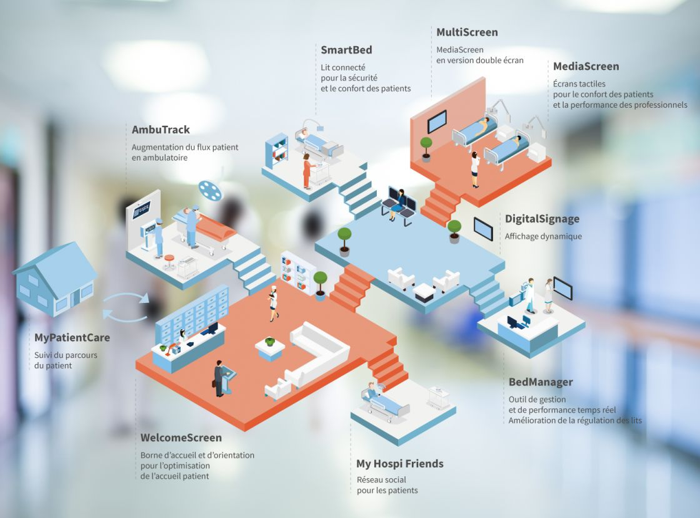
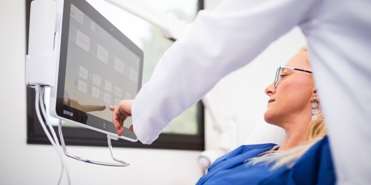

L'hopital digital par télécom santé.
Des solutions numériques au service de chacun
L’offre globale de Télécom Santé est constituée d’une palette de solutions personnalisables, autonomes et compatibles entre elles. Chacun des services proposés apporte des bénéfices pour les patients et le personnel, tout en permettant d’améliorer la performance globale de l’établissement.


Notre expertise
Notre cœur de métier porte à la fois sur le développement de solutions multimédia, l’intégration réseau de ces solutions et l’exploitation de ces services. En s’appuyant sur les outils technologiques les plus récents, nous assurons l’ensemble des étapes du cycle de vie d’un service innovant.
Découvrez nos produits

Le lit médical communicant (LMC) est un lit connecté qui permettra au personnel soignant de répondre plus vite aux besoins du patient

Mediascreen
La révolution technologique au lit du patient Un produit au service du patient…
La révolution technologique au lit du patient Un produit au service du patient…

La BabyCam est une solution conçue pour que les parents aient toujours un œil sur leur bébé en nurserie. Installée dans le service de néonatalité